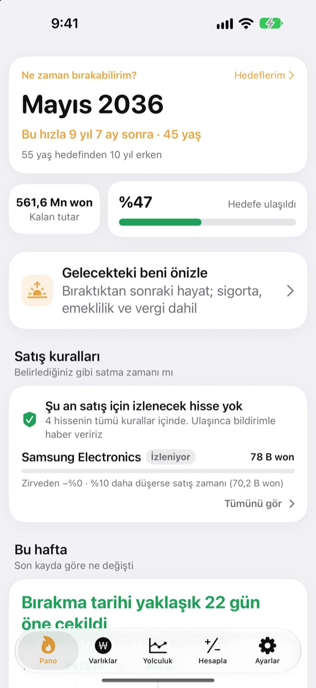
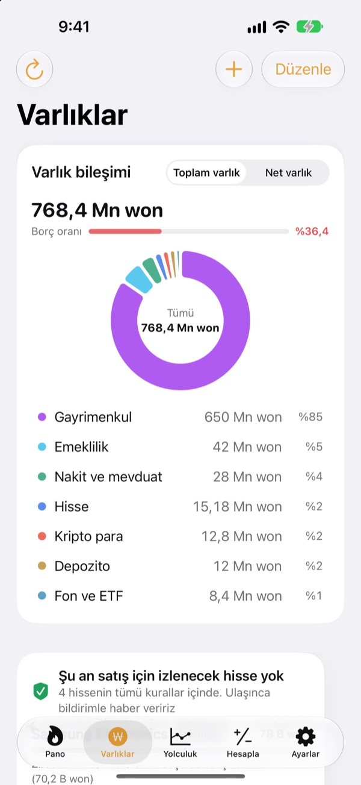
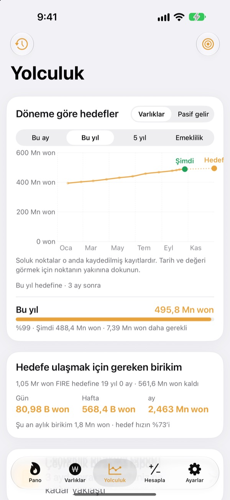
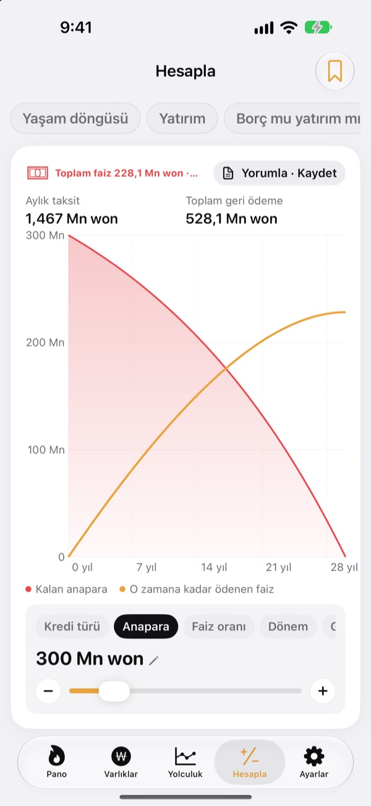

Ne zaman bırakabilirsiniz?
Hisle değil, rakamla.
Harcamanızı ve birikiminizi girin, işi bırakabileceğiniz ay karşınıza çıksın. Varlıklarınız her değiştiğinde o tarihin yaklaştığını mı uzaklaştığını mı hemen görürsünüz.
Hesap gerekmez. Kayıtlarınız cihazınızda kalır.

Bırakma tarihinizi hesaplayın
Kaydırıcıları sürükleyin. Uygulamanın ilk ekranındaki hesabın aynısı.
"Artık bırakabilir miyim?" hesabını hâlâ kafanızda mı yapıyorsunuz?
Banka, aracı kurum, bireysel emeklilik ve kira depozitosu ayrı ayrı yerlerde durunca toplamınız bile bulanıklaşır, bırakma tarihi de tahmin olarak kalır. Toesagak her şeyi tek ekranda toplar ve bu toplamdan işi bırakabileceğiniz ayı sürekli yeniden hesaplar.
Tüm varlıklar tek ekranda
Gayrimenkul, hisse, fon ve ETF, emeklilik, nakit ve mevduat, kira depozitosu, kripto ve krediler türe göre gruplanır; toplam varlık, net varlık ve borç oranıyla birlikte.
Hisse ve kripto fiyatları çekilerek değerler güncel tutulur, aracı kurum uygulamanızın ekran görüntüsü de pozisyonları ve değerleri tek seferde içeri aktarır.

Oraya varmak için günde ne kadar
Bu ay, bu yıl, beş yıl ve emeklilik hedeflerini geçmiş kayıtlarınızla birlikte tek grafikte görün. Yolda kalmak için günde, haftada ya da ayda ne kadar biriktirmeniz gerektiğini de söyler.
Varlıklarınız değiştiğinde o haftanın kaydı otomatik saklanır, geçmişiniz kendiliğinden oluşur.

Büyük kararlardan önce hesaplayın
Yaşam boyu varlık eğrisi, yatırım, borç kapatmak mı yatırım mı, kredi, birikim ve mevduat, maaşın satın alma gücü ve parayı saate çevirme için hesaplayıcılar. Bir değeri sürükleyin, grafik yeniden çizilsin; önceki eğri karşılaştırma için kesikli çizgi olarak kalır.
Sık döndüğünüz senaryolara ad verip kaydedin.

Üç adımda başlayın
- 1
Harcamanızı ve yaşınızı girin
Yaklaşık rakamlar yeterli. Bırakma tarihiniz hemen görünür.
- 2
Varlıklarınızı ekleyin
Ne kadar ayrıntılı girerseniz tarih o kadar netleşir.
- 3
Ara sıra göz atın
Haftalık kayıtlar kendiliğinden birikir, uygulama her ayın 1'inde size hatırlatabilir.
Uygulama nasıl hesaplar
- Hedef
- Bıraktıktan sonraki bir yıllık harcama ÷ güvenli çekim oranı (%4'te 25 yıllık harcama eder)
- Bırakma tarihi
- Net varlığınızın, her ay biriktirdiğinizle birlikte beklenen getiriyle büyüyerek hedefe ulaştığı ay
- Toplam varlık
- Sahip olduğunuz her şeyin toplamı
- Net varlık
- Toplam varlıktan kredi gibi borçlar çıkarıldıktan sonra kalan
- İlerleme
- Net varlık ÷ hedef. Pasif gelire göre de takip edebilirsiniz
- Değiştirebilecekleriniz
- Aylık harcama, %2 ile %6 arası çekim oranı, %0 ile %12 arası beklenen getiri, bırakmak istediğiniz yaş
Tüm sonuçlar girdilerinize dayalı yol gösterici hesaplardır ve yatırım tavsiyesi değildir.
Sorular
Kayıtlarım nerede saklanıyor?
Yalnızca cihazınızda. Üyelik yok ve geliştiriciye hiçbir şey gönderilmez. Kendi iCloud hesabınızla iPhone ve iPad'de aynı kayıtları görmek için Ayarlar'dan iCloud eşitlemeyi açın.
Fiyatlar güncellenmiyor.
ABD ve Kore hisseleri, kripto ve döviz kurları hiçbir ayar gerektirmeden çalışır. İnternet bağlantınızı ve sembolün ya da kodun doğru olduğunu kontrol edin. Daire fiyatları Kore'nin kamu gayrimenkul verilerini kullanır ve Ayarlar'a girilen ücretsiz bir servis anahtarı gerektirir.
Toplam varlık ile net varlık arasındaki fark ne?
Toplam varlık, sahip olduğunuz her şeyin toplamıdır. Net varlık, bundan kredi gibi borçlar çıkarıldıktan sonra kalandır. Bırakma tarihiniz net varlığa göre hesaplanır.
Kayıtlarımı yeni cihaza nasıl taşırım?
Ayarlar'daki Dışa aktar ile bir yedek dosyası oluşturun, Dosyalar'da, iCloud Drive'da ya da e-postada saklayın ve yeni cihazda geri yükleyin. Yedek dosyaları API anahtarlarını asla içermez. Uygulama ayrıca son 20 yedeği cihazda otomatik olarak tutar.
Satış uyarıları nasıl çalışır?
Her pozisyon için zirvesinden ne kadar düşebileceğini ya da bir hedef fiyat belirleyin. Bu sınır aşılınca haber verilir. Yükselişte uygulama sessiz kalır. Fiyatlar uygulamayı açtığınızda ve iOS izin verdiğinde arka planda (genellikle birkaç saatte bir) kontrol edilir, yani anlık takip değildir.
Rakamlarımı gizli tutabilir miyim?
Uygulamayı Face ID ya da parolayla açmak için Ayarlar'dan Uygulama kilidini açın. Kilit açıkken aylık hatırlatıcıda da hiçbir rakam görünmez.
Önce bir göz atabilir miyim?
Ayarlar'dan Demo verilerini açın ve tüm ekranları kurgusal bir kişinin varlıklarıyla gezin. Kapattığınızda kendi kayıtlarınız hemen geri gelir. iCloud eşitleme açıkken Demo verileri kullanılamaz.
Tüm verilerimi nasıl silerim?
Uygulamayı silmek cihazdaki tüm kayıtları da siler. Bir kopyasını saklamak istiyorsanız önce Ayarlar'dan bir yedek dosyası dışa aktarın.
Bu rakamlara göre yatırım yapabilir miyim?
Toesagak'ın sonuçları girdilerinize ve varsayılan getiriye dayalı yol gösterici hesaplardır. Yatırım tavsiyesi değildir; gerçek sonuçlar piyasaya ve sizin durumunuza bağlıdır.
Hata, fikir ya da soru mu var? leeo@kakao.com adresine yazın.